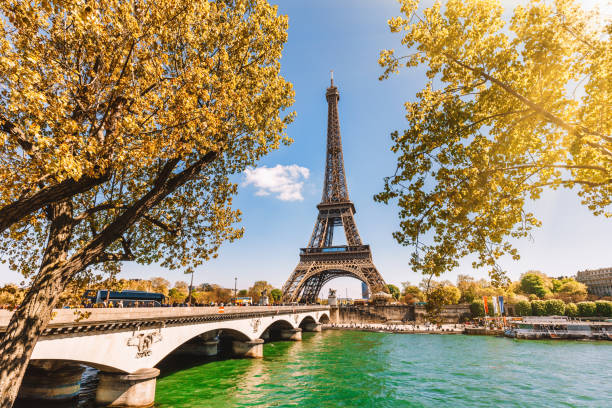
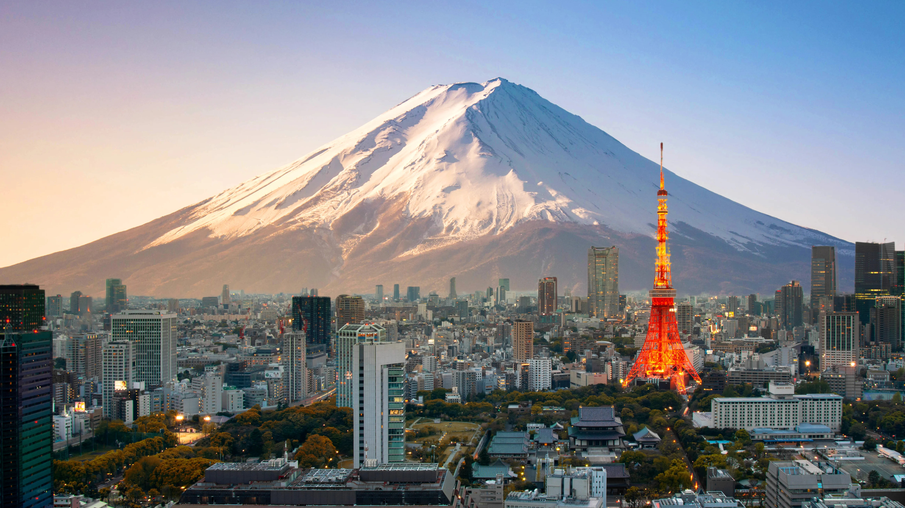
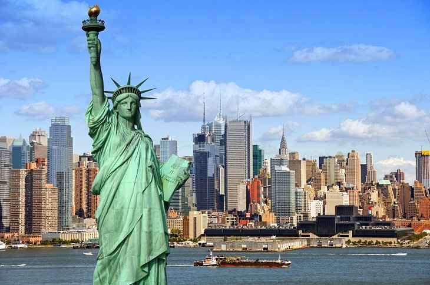

Paris, France
Welcome to Paris, the enchanting capital of France, renowned for its timeless charm, romantic ambiance, and rich cultural heritage. Paris is a city that has captured the hearts of millions with its iconic landmarks, world-class art, exquisite cuisine, and the unmistakable sense of joie de vivre. In this comprehensive guide, we'll take you on a journey through the must-see attractions, cultural treasures, culinary delights, and practical tips to ensure your visit to the City of Light is an unforgettable experience.
Tokyo, Japan
Welcome to Tokyo, the bustling metropolis that seamlessly blends tradition with cutting-edge technology. Tokyo is a city of contrasts, where ancient temples and modern skyscrapers coexist harmoniously. Whether you're a history buff, a foodie, a tech enthusiast, or an art lover, Tokyo has something to offer for everyone. In this comprehensive guide, we'll take you on a journey through the must-see attractions, culinary delights, cultural experiences, and practical tips to make your Tokyo adventure unforgettable.
New York, United States
Welcome to New York City, the iconic urban jungle where dreams come to life and endless adventures await. Known as "The City That Never Sleeps," New York is a vibrant melting pot of culture, art, cuisine, and innovation. In this comprehensive guide, we'll take you on a journey through the must-see attractions, cultural wonders, culinary delights, and practical tips to make your visit to the Big Apple unforgettable.